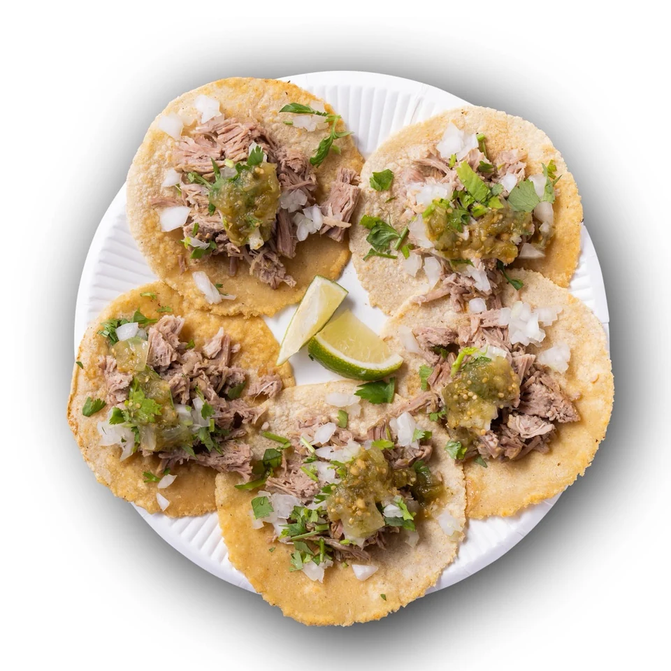
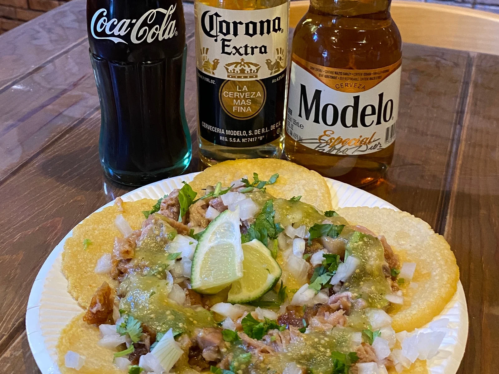
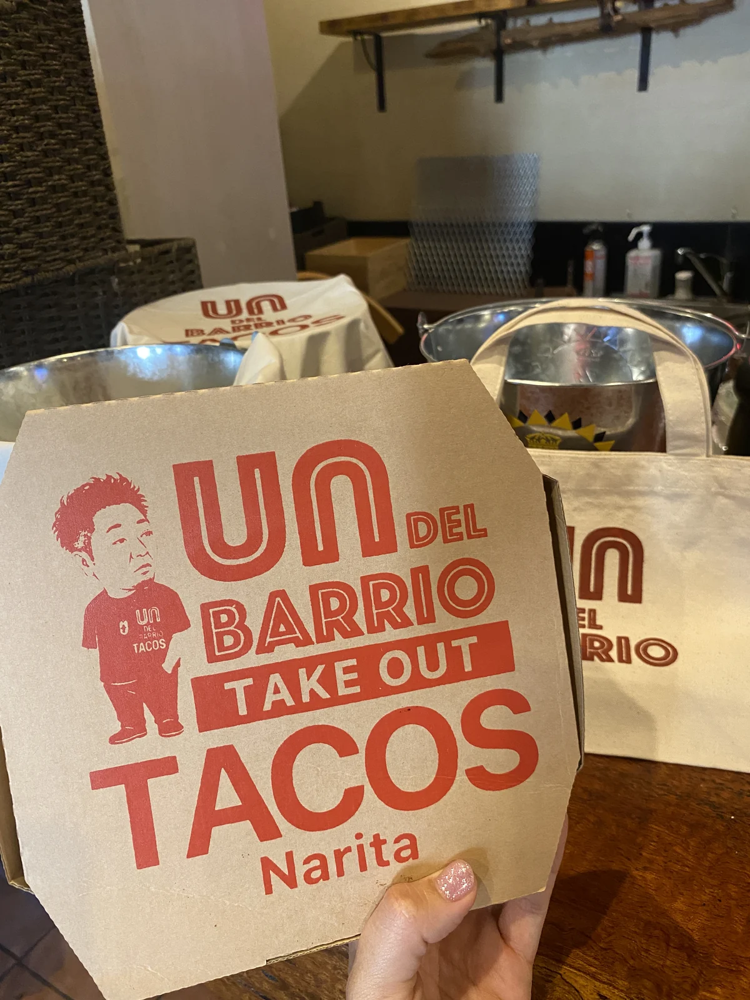
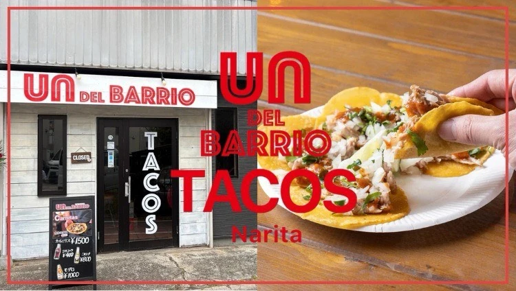

NARITA / TACOS / DAY & NIGHT
成田の町かどで
昼も、夜も、タコスを
タコス専門店
un.DEL.BARRIOアンデルバリオ
とうもろこし香る手づくりの生地に、
じっくり煮込んだ豚肩ロース
肉を味わう、カルニタスのタコス

タコスの時間を楽しんで
TACOS, DAY & NIGHT.お店を知る
01 / ABOUT
この町で、気軽に
タコスを楽しむ場所
un.DEL.BARRIO
アンデルバリオ
「地域・近所」を意味するデルバリオ
店名には、町かどで気軽にタコスを楽しんでほしいという想いが込められています
肉にこだわったカルニタスを、地域の人へ
手づくりの生地とともに味わう一皿を、カウンターやテーブルでどうぞ
03 / GALLERY
タコスと、お店の風景


04 / VISIT US
ご来店の前に
営業時間
| 曜日 | 昼 | 夜 |
|---|---|---|
| 火・水・木・日 | 〜 | 〜 |
| 金・土 | 〜 | 〜 |
| 月 | 定休日（昼・夜ともに） | |
アクセス・お店の情報
- 店名
- un.DEL.BARRIOアンデルバリオ
- 所在地
- 千葉県成田市花崎町847-1
- アクセス
- JR成田駅 東口から徒歩約3分